さて。
ファミレスで飯を食い飲み物をしこたま飲んでみっちり涼をとってからフィナーレ会場の雷電池(かんだちいけ）に向かった。
池の脇の広場では屋台が出ており、スタート地点の何もない白髭神社とはえらい違いである。
聞けば竜蛇が池に到着する前から諸々イベントやってたみたい。
で、脚折各所を廻って来た竜蛇サマはすでに池の縁に待機している。
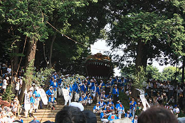
池は陸上のトラックよりやや小さい程度の大きさで、正直あまりキレイな水ではない。
これから竜蛇がこの池に突っ込むのだ。
待機中の担ぎ手の皆さん、長いので胴体部分は道にはみ出しちゃってます。
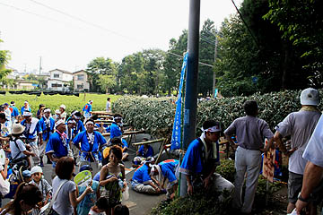
さして広くない池の周囲にはギャラリーがびっっっっっしり。
しかも一番よく見えるであろう正面部分は来賓と報道関係で独占状態。
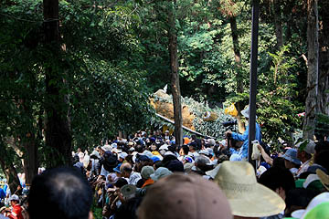
ファミレスで涼んでいたのだから文句をいう筋合いはないが、夏の祭りを見る（あるいは撮る）って大変ですね…
そんなこんなで板倉雷電神社からの水を池に注ぐと、いよいよ竜蛇が水に入る。
入る瞬間を捉えるほど良いポジションにいなかったのだが、人と人の間からかろうじて水に入るのが見えた。
良いポジションから見るとこんな事になってたそうです。

（絵葉書より）
で、池に入った竜蛇は池をグルグルと廻る。
もちろん担ぎ手の皆さんはドロドロのグチャグチャ。
半日炎天下を練り歩いて来ただけに、これが最後と言わんがばかりの熱のこもりよう。
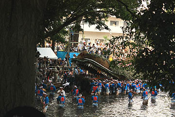 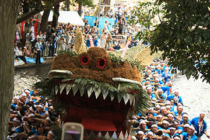
「雨ふれたんじゃく、ここにかかれ黒雲〜」という歌（何故か「な〜べ〜な〜べ〜そ〜こぬけ〜」と同じ節）と共に竜蛇がグルグルと池を回る。
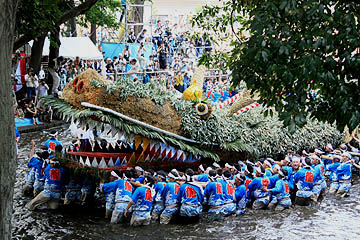
周辺の人達を退けながら練り歩く市街戦と違い水中戦は遮蔽物がなく動きものびのび。
その動きは正に水を得た魚、いや、竜でしたね。
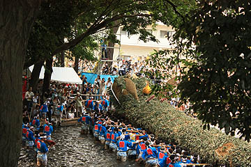 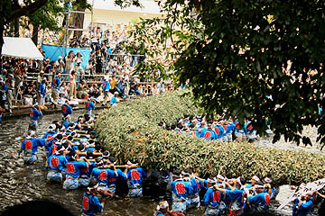
竜蛇とは言わずと知れた龍神の事である。
天地の現象を司る竜神を水に帰し気持ちよくなってもらってご機嫌を伺って雨を降らせていただこう…というストーリーなのかと勝手に想像していた。
しかし脚折の人達は神様のご機嫌伺いなどという甘っちょろい姿勢で雨を得ようとはしないのだ。
どうするのか。
天の神（雷神）を怒らせるために竜蛇を切り裂くのである！
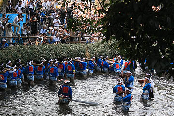
ここで冒頭の巨大な刀が大活躍。
竜蛇の胴体をバッサバッサと斬りつけるのだ！
するとまるで血飛沫が飛ぶかのごとく中身の麦藁がドヒャーっと飛び散るのだ！
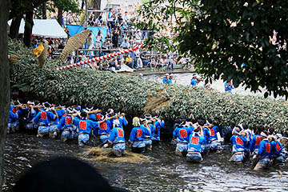 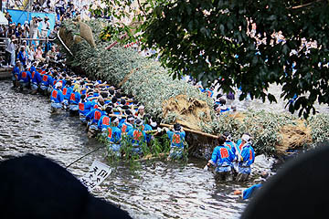
…って、実際は刀で斬る真似をすると、担ぎ手の皆さんが藁を手でバラシてるんですけど。
OＨ！mottainai！
せっかくみんなで作った竜蛇、四年後まで役所のロビーあたりにでも飾っておくのかと思ったら、バンバン斬り込んでます。
法螺貝隊もこの竜蛇退治のシーンにテンション上がってます。
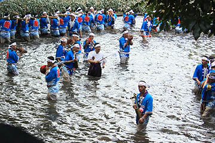
と、ここで一休み。瀕死の竜蛇を前に県知事のご挨拶。
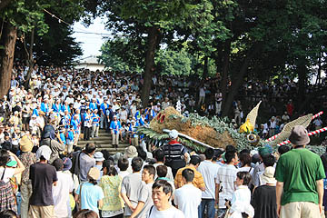 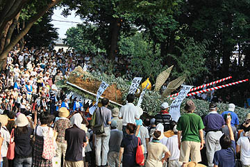
恐らく虫の息の竜蛇、そして半身水に浸かりっぱなしの担ぎ手。
でもそんなのお構いなしに県知事の挨拶は長々と続く。さりげなく地元代議士のアピールなども…
こんだけえげつない挨拶してたら水神天神雷神どころか見ている客すら荒れ狂っちゃうぞ！
そんなこんなでいよいよクライマックスのようだ。
ついに竜蛇が最後の断末魔よろしくグアッと動いたかと思ったら…
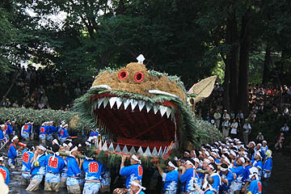
いきなり担ぎ手の皆さんが竜蛇を解体しはじめたのであった！
ええええ〜！？
呆気にとられていると竜蛇は一瞬で原型を留めることなくバラされてしまった。
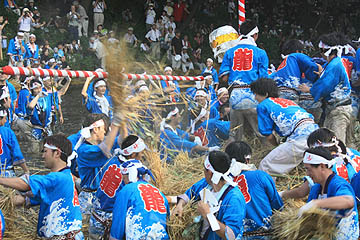 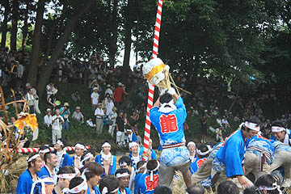
どうやら金の擬宝珠を皆で取り合っているようだ。
竜蛇の一番大事な部分だけに超縁起物らしい。
で、次に両方の目玉を奪い合い。
胴体部分も皆この日一日、いや、ここ数日間の鬱憤を晴らすかのごとくバンバンぶっ壊している。
大騒乱の中、池はあっという間に藁の海と化した。
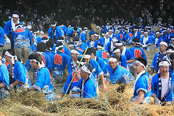 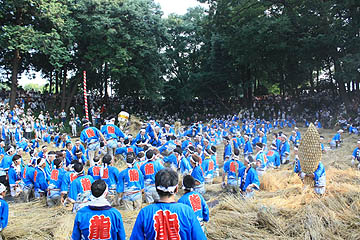
池にいた水鳥もご覧の通り。彼らにしてみりゃ何が起こったのか全くわからないだろうなあ〜。俺もだよ。
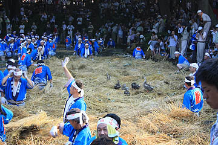
残ったのは竹のフレームのみ、それすらも次々と解体されていく。
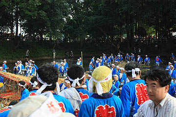
地域の方々が何日もかけて作った巨大な竜蛇を一瞬で壊す暴力的なカタルシス。
それは水神を怒り狂わせ雷と豪雨をもたらすのだという。
ちなみに池に入って水をぐるぐるかき混ぜるのも水神の怒りを誘うためだとか。
自分達が生きていくために行う究極の神殺しである。
担ぎ手のみなさんが池からどんどん藁を積み上げていく。
それをギャラリーの皆さんが縁起物として少しづつ持ち帰っていくのだ。
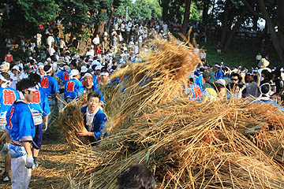 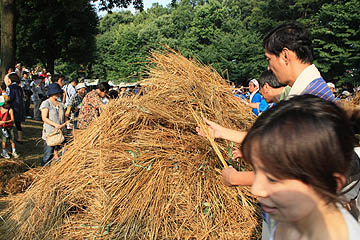
こうして四年に一度巨竜が大暴れする一大スペクタクルは幕を閉じる。
勿論現在は雨乞い行事としての性格よりも伝統行事の伝承という点に重きがおかれているが、旱魃の恐怖は神と人の逆転現象を行うに足りる理由となるのだ。
諾々と神に従う民が神に三行半を突きつける瞬間、それは窮鼠が猫を噛むような信仰上の一揆といってもいいかもしれない。
そんなわけでこの雨乞行事は単にビジュアルだけでなく、神殺しを見られる非常に貴重な意味を持つ祭礼だと思う。
次回はロンドンオリンピックの年ですね。
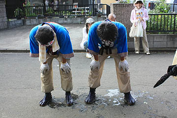
お疲れさまでした…
2008.8.